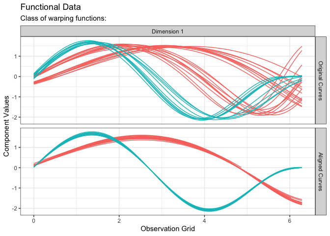
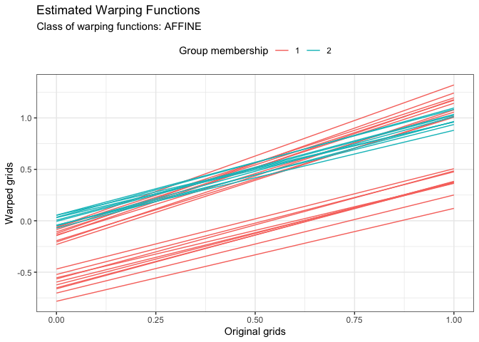

The fdakmapp package provides the kma() function that jointly performs clustering and alignment of a functional data set. Mean and medoid center methods are available. The algorithm is fully parallelized.
Getting Started
The source code can be cloned or downloaded directly from github. An R studio project file is provided to open the project in RStudio.
Prerequisites
The package is linked against OpenMP, the BLAS and LAPACK libraries. Therefore, you should make sure that your R / RStudio environment is ready
- to build packages: to check this, type in the console
-
to build packages with compiled code:
- on Linux: it should be ready;
- on Windows: you should install Rtools;
- on macOS: you should install a set of tools.
to build packages with C++ code through Rcpp: on macOS, you can for instance follow this tutorial.
Installation
The fdakmapp package is currently only available on GitHub. You can install it as follows:
Example
library(fdakmapp) res <- kma( simulated30$x, simulated30$y, seeds = c(1, 21), n_clust = 2, center_method = "medoid", warping_method = "affine", dissimilarity_method = "pearson" ) #> Information about the data set: #> - Number of observations: 30 #> - Number of dimensions: 1 #> - Number of points: 200 #> #> Information about cluster initialization: #> - Number of clusters: 2 #> - Initial seeds for cluster centers: 1 21 #> #> Information about the methods used within the algorithm: #> - Warping method: affine #> - Center method: medoid #> - Dissimilarity method: pearson #> - Optimization method: bobyqa #> #> Information about warping parameter bounds: #> - Warping options: 0.1500 0.1500 #> #> Information about convergence criteria: #> - Maximum number of iterations: 100 #> - Distance relative tolerance: 0.001 #> #> Information about parallelization setup: #> - Number of threads: 1 #> - Parallel method: 0 #> #> Other information: #> - Use fence to robustify: 0 #> - Check total dissimilarity: 1 #> - Compute overall center: 0 #> #> Running k-centroid algorithm: #> - Iteration #1 #> * Size of cluster #0: 20 #> * Size of cluster #1: 10 #> - Iteration #2 #> * Size of cluster #0: 20 #> * Size of cluster #1: 10 #> #> Active stopping criteria: #> - Memberships did not change. plot(res, type = "data")

plot(res, type = "warping")
